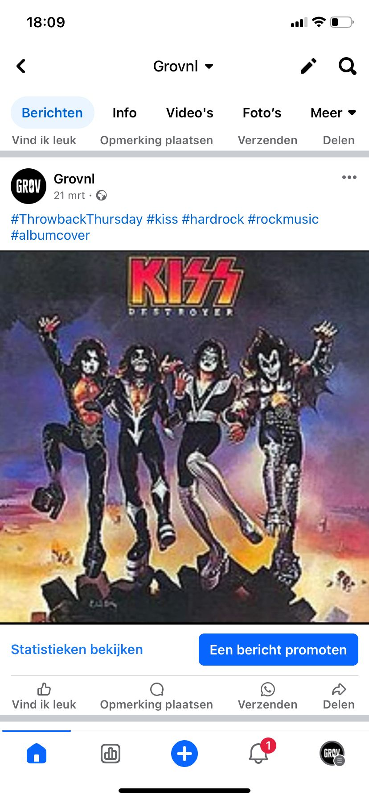
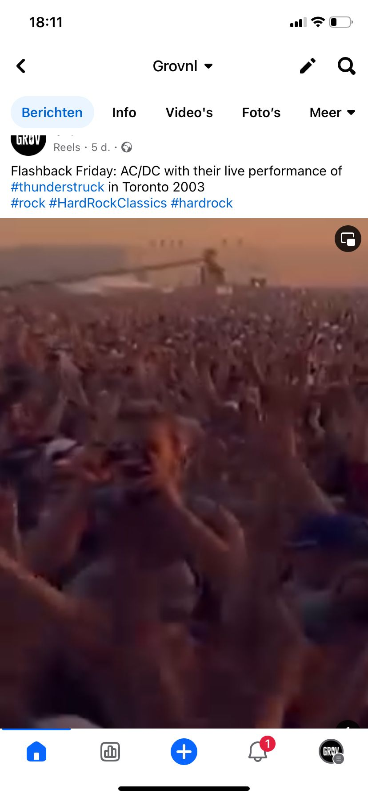

General Information
GrovNL is publicly available at https://grovnl.github.io/grovnl/index.html
This website was created by…
- Elise Wolterink (221282)
- Storm Limbeek (220972)
- Morris Roefs (222621)
- Merel van den Wildenberg (222437)
Content
| # | Student ID | Name and link of content |
|---|---|---|
| 1. | 221282 (Elise Wolterink) | About us |
| 2. | 220972 (Storm Limbeek) | Home page + CSS |
| 3. | 222621 (Morris Roefs) |
Head of management |
| 4. | 222437 (Merel van den Wildenberg) | Corporate page |
To be able to connect with our target audience more, we have created two persona's
Bas Betjens

Bas is a young, fresh, man who lives in his apartment in Rotterdam where he studies History. His family all live in Eindhoven. He is a real family person and loves being together. Bas likes his study in Rotterdam, but he belongs to the town where he was born: Eindhoven. He likes to play tennis in his free time, he always plays it with his mom. He also has something that he shares with his dad: their love for hard rock music. Bas likes to listen to it but playing it on his guitar is even better. He has his own small band called Metal Z in Eindhoven with four other friends he met in high school.
Frustrations:
Jan de Jong

Jan was born in Valkenswaard, he lived there his whole life with his parents. When he was 20 years old his dad passed away who had his own pub in Eindhoven called Café ‘t Snaartje. Jan always had the dream of taking over this pub as soon as his dad wanted to retire, but unfortunately, because of the loss of his dad, he quit his studies and decided to focus on the pub. In Jan's free time he likes to go out for a walk and play darts. In 2023 he achieved his diploma in a special beer course of which he applies the knowledge every day.
Production
Design Elements
-
The color scheme: We chose for a color palette with high contrast colors for a unique and defined look.
- #350f92
- Purple, has these same powers, this time a hard contrast with the color yellow as they are on opposite sides of the color wheel, it is a choice made for hard edges. And once used with black makes for a good match because of their dark nature. Purple also conveys the feeling of Passion which is our main value.
- #fae34d
- Yellow being a bright color, it has a high contrast to the black resulting in hard changes of color, besides, yellow is a color that conveys energy and joy. These emotions are highly connected to Expression which is one of our main values.
- #424141
- We chose for a color palette with high contrast colors for a unique and defined look. Black, the primary color is widely used by the target audience because of its dark nature that aligns with message of the music (hard rock). We want to make use of this dark grey to have a color that we can use to compensate for the harsh contrasts here and there.
- Font choices <<<<<<< HEAD ======= >>>>>>> 43ddf95a37eb995898f46ad80f77b9664ecb4f04
- User interface patterns
- The structure of the navigation and content (e.g. how content units are distributed across pages)
- All these elements must be justified by referring to the theory and/or vocabulary of design
- Please relate these elements to other units, for example:
- How does website design fit the values and personality of the brand?
- How does website design fit the marketing and communication strategy?
- How does website design help showcase the unique value proposal of the product?
Cheddar gothic rough: as the name suggests itself this fount is very rough. It is a font that mimics the imperfect nature of stencils. As it is see through it gives it a texture that conveys the hardness that the target audience is found of.
Bebas Neue: A font that is often used for its harness. It has very angular shapes that makes for a hard contrast with its surrounding background. This contrast also ensures it’s legibility.
Open sans: The open sans font is used for its highly legible nature and is therefore a perfect font for paragraphs and bigger pieces of text.
Home page: On the homepage we chose for a big logo as the first thing a visitor sees, along with and explanation of what our website is, so that they immediately know both where they are and what to expect. As they scroll down, they will see a two-column grid with a picture that illustrates what they could be. Along with our slogan and a call-to-action button to learn more about us as a Brand. Next to it our 4 values in a big header font. All these choices were made for the visitor to know who we are and what we stand for. But also, for them to know how we can help them achieve what they want.
Our visitors will most likely be niche in search for what we can offer. We want them to know that they are in the right place. The next section, explains to the visitor how it works. In order to see this section of the website you would have to scroll down, which indicates a first degree of interest as they start looking further. Here we chose for the brighter color of our palette for a more legible experience as we are more used to reading black on white than white on black. We chose for two columns lay out with two titles and subtitles so that it is clear for the visitor which part of the text they have to read that aligns with why they are visiting our website. This way they do not have to read big paragraphs that do not give them the information they are searching for.
Once they have read about 150 words explaining them how it works and they are still interested to scroll further, it brings them to a call to action. A section with popular venues in they area. A card grid was chosen instead of a list format so that these venues would feel important. In this way a band that visits our website feels like they get the chance to play at venues that feel important. And a venue that wants to join, knows that their venue will be on the front page if they are popular enough. The “book now” button is mean to convey a sense of urgency for the visitor to want to immediately book these venues. Finally, a footer with the chance to visit our Social Media channels.
About us: This page is accessible via the button in the home page or in the navigation bar. The goal for this page is less “in your face” and although keeping the style of the website gives the visitor an opportunity to take their time to read who we are as a team and a brand. The use of our brand name and slogan, just like on the home pages, makes the visitor read this twice with makes it more memorable.
The purple background of the “About us” section in mean to lead the visitor’s eye toward that section with its contrast the otherwise mostly black page. As that is the information, they clicked on to get to it is one of the first things we want them to read. A less important font is used for the values, vision and mission as we want the visitor to take their time to read about what we stand for.
At the bottom of the page, a card system that presents the team. This was chosen so that we could include photos, for a more personal feeling and a connection with the visitor.
Navigation bar: We chose for a simple navigation bar; it only contains three buttons. We didn’t want the visitor to feel pushed to immediately navigate through our website, but rather look at the home page first. This is also why the “home” button is the only one in bold.
Credits
- Photo cover page: Photo by Juliette F on Unsplash
- Photo's of pubs on home page: Photo's by Patrick Tomasso, Victor Clime, QUI NGUYEN and Tyler Nix on Unsplash
- Photo's of persona's: Photo by Ana Nichita on Unsplash (Bas), Photo by Craig McKay on Unsplash (Jan)
Testing Report
This testing report was designed to test the website of GrovNL, a new website that provides the opportunity for upcoming hard rock stars get the opportunity to show their talent, and for pub owners to easily find available bands to perform. This happens through an online portfolio.
Testing Goals:
- Evaluate the level of clarity of information shared on the website.
- To make sure the website matches the criteria.
- Assess the navigation and overall user experience.
- Gather layout and website content feedback.
- To identify errors
Testing Method:
The testing rounds were done by five participants who match our target group: Teun (artist), Bram (Pub owner), Mathijs (artist), Tom (hard-rock fan), Bart (Artist). Different segments of our target group as you can see. They are all aged between 20 and 35 and have high usability experience in using websites.
The testing rounds were done online via Teams or physically. In the online call, the screen of the tester was shared to see what they did. The person who instructed them also analyzed their actions.
Performance: We asked our participants to check every page of the website without any long loading images or different types of errors. Accessibility: We asked our participants to go to the lean canvas, what the name is of the girl with the brown hair (they should go to ‘about us’ and see it’s Elise), and visit our Instagram account. Functionality: We asked our participants if the values of our brand match our website and if in their opinion the style was coherent on every page (including title fonts, sizes, etc.)
Findings
Suggested improvements
Marketing
Context of campaign and promotional activities
The goal of this social media campaign was to create a community of online users that could be interested in our product. We kept our target audience in mind while posting always, making sure we would reach the right people. The plan was to create a group of engaged people within the Hardrock scene by letting them engage as much as possible together. We would try to achieve this by posting fun reels and asking people questions in the descriptions of our posts.
We created accounts on both Instagram and Facebook, looking at our two different persona's. We posted the same content for both Instagram and Facebook, because of the fact that a lot of reels watched on Facebook and Instagram are found on the same sources (This is not a good idea, read more about it in the learning points).
The activities we executed displayed in our social media content calendar, for that please see appendix 5
Our objectives for this campaign are as following:
Reach objective
Affect:
We want our target audience to feel like they are a part of a hard rock community. This will ensure that they are getting prepared for our platform, having made some connections online already. We will post funny content and content with a nostalgic sense, but balancing that with also showing new faces to create that modern feel.
Response
Media tactics
Learning Points
During our campaign, we learned a lot and had several eye-openers. In general, we are still neutral about hashtags as some posts without hashtags reached well, and others didn’t, and vice versa. We are quite surprised with some outcomes and overall we underestimated the effort to put in a social media campaign!
What worked?
Instagram: Instagram did a good job. We did not achieve our goal of 10.000 accounts total reach, but after a rough start with not much reach, we gained more by posting more videos and ended up with in total reach of 6.000 people. We also think that Instagram worked better because we are familiar with it, and less familiar with Facebook.
The group dynamics: It was very pleasant to work with this group, everyone was eager to start this campaign and had nice ideas for posts. We all were open to changes and experimenting with posting despite it would change our social media planning, it was never a problem!
Following random people: On Instagram, we started following several accounts within the hard-rock scene and that worked very well. Different accounts started to follow us back.
What did not work?
Equal posting division: At the beginning of our campaign, we decided that we would rotate the responsibility for posting every day. Our planning shows who’s responsible for what day for what post. However, at the beginning of this project, we noticed that some of our groupmates forgot to post. In a company situation we maybe should point to just one person who is responsible for posting, but to keep the project effort equal we chose to do all four. The learning point here was to really plan your posting day and even plan the whole post via a planner tool. However, after the first week of some forgotten posts and a warning, we all started taking it seriously and it went well for the rest of the weeks.
Facebook:
Time of posting: At the beginning of the posting process, we decided to post every day around 17:00. After one week of some forgotten posts, we saw that the videos that were posted later in the evening did better for reach.
Future Planning
We started out using Instagram and Facebook to reach both of our primary target audiences. Instagram for bands that consist of mainly younger people and Facebook for bar owners that are mainly older people.
In general:
Professionalism
Week 1
-
Analytics
Week 3
- <<<<<<< HEAD ======= >>>>>>> 43ddf95a37eb995898f46ad80f77b9664ecb4f04
Analytics
Week 4
Analytics
Week 5
- =======
Week 5
- >>>>>>> 43ddf95a37eb995898f46ad80f77b9664ecb4f04
Facebook


- 
- 


Some videos got blocked because we got the footage off YouTube...
Management
Lean Canvas
<<<<<<< HEADLean Canvas
Lean Canvas 1
Lean Canvas 2
=======Lean Canvas 1
Lean Canvas 2
>>>>>>> 43ddf95a37eb995898f46ad80f77b9664ecb4f04Services/products
We offer a market for demand and supply of hard rock performances. Our website is a place where you can either offer you and your band as a product to be hired or search for bands to hire for your bar/venue. The website is focused on hard rock and no other genres. Bands can upload all their information like contact details, location and price. But also, promotion in the form of videos and pictures as a digital resume of their band. Also, the website filters on location so that bar owners from Eindhoven get in contact with bands from Eindhoven and not Amsterdam for example. This creates a clear overview
The mission of our brand is to make sure that the popularity of hard rock bands in general does not go extinct. Our product directly contributes to this mission. We want to give upcoming artists and bands the opportunity to get more recognition so the general popularity of hard-rock bands remains. Also, with our product we strive to keep our brand values passion and expression.
Lean Canvas 3
(See appendix 6,7,8 for cost structure sources)
Services/products
Our website is a space were hard rock bars, cafes and other venues can offer their place to hard rock bands to perform. They upload vacancies on our website to which bands can apply. The bar owners get a clear overview of all the bands and can book one they like through the website. The bars, cafes and other venues create a portfolio to show what their place looks and feels like. The website is focused on hard rock and no other genres. Bands can upload all their information like contact details, location and price. But also, promotion in the form of videos and pictures as a digital resume of their band. Also, the website filters on location so that bar owners from Eindhoven get in contact with bands from Eindhoven and not Amsterdam for example. This creates a clear overview
<<<<<<< HEAD- List your top 3 problems you solve for your target group(s).
- Describe briefly how the problems are solved now (existing alternatives).
Analytics:
Week2
Solution
- Outline the brand solution(s) you have for the above problem(s).
Customer segments
- List your target customers and/or users.
- Describe briefly the characteristics of your ideal customer (early adopter, brand persona).
Unique value proposition
- With a single, clear compelling message, state why your brand idea is different and worth paying attention to.
Unfair advantage
- List the aspect(s) of your brand that cannot easily be copied, also called your sustainable competitive advantage(s).
Channels
- List your main path to customers.
- How do you reach them? What channel(s) do you use.
Key metrics
- List the key numbers that tell you how your brand experience is doing.
- For example amount of users, downloads, visitors, subscriptions, sales etc. Numbers you are able to measure.
Revenue streams
- List your sources of revenue: describe the revenue model and the (different) revenue stream(s).
Cost structure
- List your main costs: define the fixed and variable costs.
- Calculate the cost per unit.
Services/products
- State what your product and/or service is and how this contributes to your unique value proposition.
- Clarify the fit between the product/service developed and the brand identity/brand image.
The mission of our brand is to make sure that the popularity of hard rock bands in general does not go extinct. Our product directly contributes to this mission. We want to give upcoming artists and bands the opportunity to get more recognition so the general popularity of hard-rock bands remains. Also, with our product we strive to keep our brand values passion and expression.
>>>>>>> 43ddf95a37eb995898f46ad80f77b9664ecb4f04Validation of Assumptions
- Positive portrait: Hard rock fans face a lot of negative stereotypes that are hold against them. They are often seen as violent and aggressive while this is in most cases the opposite. By creating a platform to show the positive attributes of hard rock fans, this negative stereotype can be broken. This can include showing their passion for music or their community spirit in concert videos.
- Joined transport to concerts: Concerts are often far away, and most hard rock fans like to drink alcohol at a party. Leaving them unable to drive a car and having to take public transport. This can be inconvenient since they have to leave the concert early to catch a train. If there is a way for hard rock fans to meet people from there are to share a car, this problem can be bypassed.
- Decreasing popularity: The hard rock genre is not as popular as it has been, especially in the USA. Most popular hard rock bands are older bands from the 70’s and 80’s. A hard rock fan base to promote the hard rock genre could increase the popularity again.